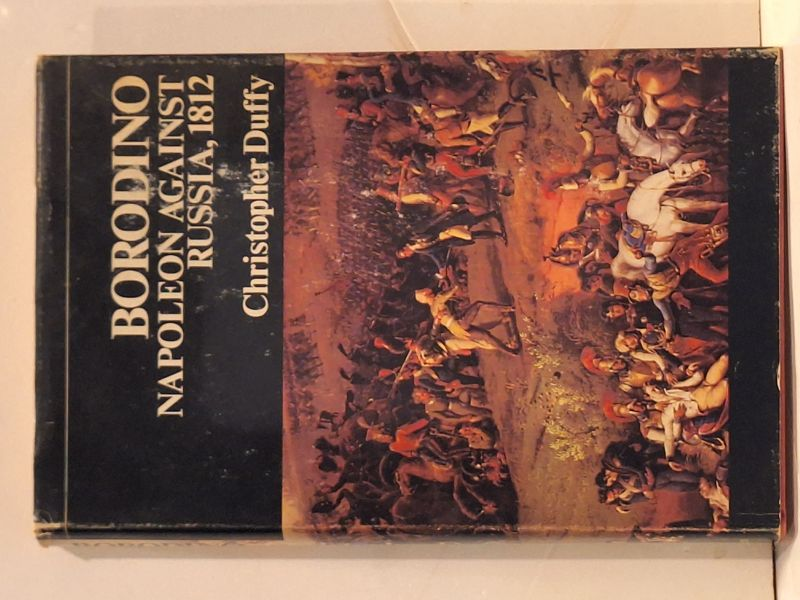

Borodino and the War of 1812
Christopher Duffy · Charles Scribner's Sons, New York, 1973

C$85 · Very Good condition
First American edition (Charles Scribner's Sons, New York, 1973). SBN 684-13173-0, Library of Congress Catalog Number 72-5758, printed in Great Britain. Hardcover with original unclipped pictorial dust jacket (jacket title reads 'Borodino: Napoleon Against Russia, 1812'). Dust jacket shows light edge wear with small rips at the upper corners. Boards clean, binding tight, text block clean. Faint pencil pricing on the front free endpaper.
Details
- Publisher: Charles Scribner's Sons, New York, 1973
- Binding: Hardcover
- Edition: First American Edition
- Condition: Very Good
- Dust jacket: Good
- ISBN: 0-684-13173-0
- Category: Military